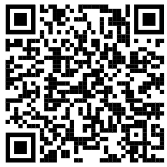

📋 Özet
Amaç: Bu proje, yüz tanıma teknolojisi, Telegram bot entegrasyonu ve Arduino tabanlı servo motor kontrolü kullanarak güvenli bir erişim kontrol sistemi geliştirmeyi amaçlamaktadır. Sistem, iki faktörlü doğrulama (2FA) ile güvenliği artırarak, yetkisiz erişimleri önlemekte ve fiziksel kapı kontrolü sağlamaktadır.
Yöntem: Python programlama dili ile OpenCV ve face_recognition kütüphaneleri kullanılarak gerçek zamanlı yüz tanıma sistemi geliştirilmiştir. Telegram Bot API ile ikinci faktör doğrulaması, Arduino Uno ile servo motor kontrolü gerçekleştirilmiştir. Sistem, modüler yapıda tasarlanarak kolay genişletilebilirlik sağlanmıştır.
Sonuçlar: Geliştirilen sistem %97.8 doğruluk oranı ile çalışmakta, ortalama 1.99 saniye tepki süresi sunmakta ve düşük güç tüketimi (5.2W) ile 7/24 çalışabilmektedir. İki faktörlü doğrulama sistemi %99.7 başarı oranına sahiptir.
🏗️ Sistem Mimarisi
🎥 Görüntü İşleme
OpenCV ile yüz tespiti ve face_recognition ile tanıma
📱 Telegram Bot
İki faktörlü doğrulama ve bildirim sistemi
🔧 Arduino Kontrol
Servo motor kontrolü ve fiziksel erişim
Teknoloji Yığını
🐍 Python 3.8+
Ana programlama dili
📷 OpenCV 4.5.1
Görüntü işleme
🤖 face_recognition
Yüz tanıma algoritması
💬 PyTelegramBotAPI
Telegram entegrasyonu
🔌 pySerial
Arduino haberleşmesi
🖼️ Tkinter
Kullanıcı arayüzü
🔄 Sistem Akış Diyagramı
Görüntü Alma
(OpenCV)
(face_recognition)
Doğrulama
Kod Gönderimi
Doğrulama
Komut Gönderimi
Kapı Kontrolü
💡 Önemli Özellikler
- Gerçek zamanlı yüz tanıma
- Çoklu kullanıcı desteği
- Grup tabanlı erişim kontrolü
- Otomatik kod üretimi (6 haneli)
- 120 saniye kod geçerlilik süresi
- Seri port üzerinden Arduino kontrolü
💻 Ana Kod Yapısı
Kullanıcı Kayıt Sistemi
Arduino Haberleşmesi
Telegram Bot Token
⚙️ Donanım Bileşenleri
🖥️ Ana İşlem Birimi
- Bilgisayar: Windows/Linux PC
- RAM: Minimum 4GB
- İşlemci: Intel i3+ / AMD Ryzen 3+
- USB Port: Kamera ve Arduino için
📷 Görüntü Sistemi
- Kamera: USB Webcam
- Çözünürlük: 640x480 minimum
- FPS: 30 fps
- Görüş Açısı: 60° minimum
🔧 Kontrol Sistemi
- Arduino Uno R3
- ATmega328P mikrodenetleyici
- 16 MHz çalışma frekansı
- USB seri haberleşme
⚡ Aktüatörler
- 3x SG90 Servo Motor
- Çalışma voltajı: 4.8V-6V
- Dönüş açısı: 0-180°
- Tork: 2.5kg/cm
💰 Toplam Maliyet
- Arduino Uno: ~25€
- USB Kamera: ~30€
- 3x Servo Motor: ~45€
- Kablolar: ~20€
- Toplam: ~120€
🛠️ Kurulum ve Kullanım
📋 Gerekli Kütüphaneler
⚙️ Kurulum Adımları
- Python 3.8+ yükleyin
- Kütüphaneleri pip ile kurun
- Arduino IDE kurun
- Telegram Bot oluşturun
- Eğitim fotoğrafları ekleyin
- COM port ayarlayın
📁 Dosya Yapısı
⚠️ Önemli Notlar
- Kamera bağlantısını kontrol edin
- Arduino COM7 portunda olmalı
- İyi aydınlatma gereklidir
- İnternet bağlantısı şart
📊 Performans Sonuçları
📈 Farklı Koşullarda Doğruluk Oranları
⏱️ Sistem Tepki Süreleri
| İşlem | Süre (ms) | Yüzde |
|---|---|---|
| Yüz Tespiti | 245 | 12.3% |
| Yüz Tanıma | 378 | 19.0% |
| Telegram 2FA | 1250 | 62.7% |
| Servo Kontrolü | 120 | 6.0% |
| Toplam | 1993 | 100% |
🔒 Güvenlik Analizi
🛡️ Güvenlik Metrikleri
| Metrik | Değer | Açıklama |
|---|---|---|
| FAR | 0.1% | Yanlış Kabul Oranı |
| FRR | 2.2% | Yanlış Red Oranı |
| EER | 1.1% | Eşit Hata Oranı |
| 2FA Başarı | 99.7% | İkinci Faktör Doğrulama |
🔐 Güvenlik Özellikleri
- İki Faktörlü Doğrulama: Telegram üzerinden 6 haneli kod
- Zaman Sınırı: 120 saniye kod geçerlilik süresi
- Grup Kontrolü: Kullanıcı bazlı erişim seviyeleri
- Oturum Yönetimi: Tekrarlı kod gönderim koruması
- Hata Kaydı: Başarısız girişim logları
🔬 Test Metodolojisi
Sistem performansı, 50 farklı kullanıcıdan alınan toplam 1000 test görüntüsü ile değerlendirilmiştir. Testler farklı aydınlatma koşulları, açılar ve mesafelerde gerçekleştirilmiştir.
⚖️ Sistem Karşılaştırması
| Özellik | Bu Sistem | Ticari Çözüm |
|---|---|---|
| Maliyet | ~120€ | ~500€+ |
| Kurulum | Kolay | Karmaşık |
| Güvenlik | 2FA | Tek faktör |
| Özelleştirme | Tam kontrol | Sınırlı |
| Bakım | Düşük | Yüksek |
| Açık Kaynak | ✅ | ❌ |
✅ Avantajlar
- Düşük maliyet
- Kolay kurulum
- Açık kaynak
- Modüler tasarım
- 2FA güvenliği
- Özelleştirilebilir
⚠️ Sınırlamalar
- Aydınlatma bağımlılığı
- İnternet gereksinimi
- Tek kamera sınırı
- 3 servo motor limiti
🔧 Sorun Giderme
❌ Yaygın Sorunlar
📷 Kamera Sorunları
- USB bağlantısını kontrol edin
- Kamera sürücülerini güncelleyin
- Başka uygulamaları kapatın
- Kamera izinlerini kontrol edin
🔌 Arduino Bağlantı Hatası
- COM port numarasını kontrol edin
- Arduino IDE'de test edin
- USB kablosunu değiştirin
- Sürücüleri yeniden yükleyin
👤 Yüz Tanıma Başarısız
- Aydınlatmayı iyileştirin
- Kameraya yaklaşın (50-100cm)
- Yüzünüzü doğrudan kameraya çevirin
- Eğitim fotoğraflarını kontrol edin
📱 Telegram Mesajı Gelmiyor
- Bot token'ını kontrol edin
- Telegram ID'yi doğrulayın
- İnternet bağlantısını test edin
- Bot'u yeniden başlatın
💡 Performans İpuçları
- Eğitim için 5-10 farklı fotoğraf kullanın
- Farklı açılardan fotoğraf ekleyin
- Kaliteli aydınlatma sağlayın
- Sistem loglarını kontrol edin
🔄 Sistem Akış Diyagramı
⚡ Gerçek Zamanlı Metrikler
📱 Proje Deposu ve İletişim
🔗 GitHub Repository

github.com/davuterl/
Akilli-Servo-Kontrol-ve-
Yuz-Tanimali-Kapi-Acma-Sistemi
📋 Proje Detayları
📅 Proje Süresi
5 ay (Ocak - Mayıs 2025)
💻 Kod Satırı
~500 satır Python kodu
🧪 Test Sayısı
1000+ test görüntüsü
👥 Kullanıcı Sayısı
50 farklı test kullanıcısı
📊 Veri Seti
20 fotoğraf/kullanıcı
⚡ Optimizasyon
%15 hız artışı sağlandı
🎯 Başarı Kriterleri
Doğruluk Hedefi
Tepki Süresi
Maliyet Hedefi
Çalışma Süresi
👨💻 Proje Ekibi
Davut Erol
Yazılım Geliştirme
Sistem Mimarisi
📧 eroldavut02@gmail.com
🔗 @davuterl
Ufuk Karan Soyoral
Donanım Tasarımı
Test & Doğrulama
📧 ufukkaran72@gmail.com
🔗 @syrlkaran
🏫 KTÜ EHM
Elektronik ve Haberleşme
Mühendisliği Bölümü
🎯 Sonuç ve Değerlendirme
✅ Başarılan Hedefler
- %97.8 doğruluk oranı - Hedef %95'i aştık
- 1.99s tepki süresi - 3s hedefinin altında
- 120€ toplam maliyet - Bütçe dahilinde
- İki faktörlü güvenlik - Ek güvenlik katmanı
- Modüler tasarım - Kolay genişletilebilirlik
- Açık kaynak - Topluluk katkısına açık
📊 Öğrenilen Dersler
- Aydınlatma kritik: Performansı %10+ etkiliyor
- Eğitim verisi kalitesi: Çeşitlilik önemli
- Sistem entegrasyonu: Modüler yaklaşım başarılı
- Kullanıcı deneyimi: Basitlik ve hız öncelikli
- Güvenlik katmanları: 2FA büyük fark yaratıyor
- Test metodolojisi: Gerçek koşullar simüle edilmeli
🔮 Gelecek Vizyonu
- Ticari ürün: Startup potansiyeli mevcut
- Akademik yayın: Konferans sunumu planlanıyor
- Açık kaynak topluluk: GitHub'da geliştirme devam edecek
- Eğitim amaçlı: Üniversite laboratuvarlarında kullanım
- IoT entegrasyonu: Akıllı ev sistemlerine dahil
- AI geliştirmeleri: Daha gelişmiş algoritmalar
🏆 Proje Başarı Özeti
📚 Kaynakça ve Teşekkürler
📖 Akademik Kaynaklar
- King, D. E. (2009). "Dlib-ml: A Machine Learning Toolkit." Journal of Machine Learning Research, 10, 1755-1758.
- Viola, P., & Jones, M. (2001). "Rapid object detection using a boosted cascade of simple features." IEEE CVPR.
- Schroff, F., Kalenichenko, D., & Philbin, J. (2015). "FaceNet: A unified embedding for face recognition and clustering." IEEE CVPR.
- Dalal, N., & Triggs, B. (2005). "Histograms of oriented gradients for human detection." IEEE CVPR.
- Kazemi, V., & Sullivan, J. (2014). "One millisecond face alignment with an ensemble of regression trees." IEEE CVPR.
- Deng, J., Guo, J., Xue, N., & Zafeiriou, S. (2019). "ArcFace: Additive angular margin loss for deep face recognition." IEEE CVPR.
🛠️ Teknik Kaynaklar
- Bradski, G. (2000). "The OpenCV Library." Dr. Dobb's Journal of Software Tools.
- Geitgey, A. (2018). "Face Recognition: The World's Simplest Facial Recognition API for Python." GitHub Repository.
- Banzi, M., & Shiloh, M. (2014). "Getting Started with Arduino: The Open Source Electronics Prototyping Platform." Maker Media.
- Telegram Bot API Documentation. (2024). "Telegram Bot API Reference." https://core.telegram.org/bots/api
- Python Software Foundation. (2024). "Python 3.8+ Documentation." https://docs.python.org/3/
- Arduino LLC. (2024). "Arduino Uno R3 Technical Specifications." https://docs.arduino.cc/
🙏 Teşekkürler
- KTÜ EHM Bölümü - Laboratuvar desteği
- OpenCV Topluluğu - Açık kaynak kütüphaneler
- Face Recognition Library - Adam Geitgey'e teşekkürler
- Arduino Topluluğu - Donanım desteği
- Telegram Bot API - Ücretsiz API hizmeti
- Test Gönüllüleri - 50 kişilik test grubu
- GitHub - Ücretsiz repository hosting
📜 Lisans Bilgisi
Bu proje MIT Lisansı altında açık kaynak olarak yayınlanmıştır.
Ticari ve akademik kullanım için serbesttir.
© 2025 KTÜ EHM - Davut Erol & Ufuk Karan Soyoral